Pengantar
Bapak/Ibu, pemanfaatan media pembelajaran numerasi untuk murid dengan hambatan intelektual didasari oleh karakteristik dan kebutuhan belajar khusus karena murid dengan hambatan intelektual memiliki keterbatasan dalam beberapa aspek, terutama dalam berpikir abstrak.
Beberapa pertimbangan utama dalam pemanfaatan media pembelajaran numerasi untuk murid dengan hambatan intelektua, antara lain:
- Keterbatasan berpikir abstrak dan memerlukan hal-hal konkret.
Rochyadi (2005) menyatakan bahwa mempertimbangkan media pembelajaran sangat penting ketika mengajar murid dengan hambatan intelektual. Hal ini disebabkan karena anak dengan hambatan intelektual kurang mampu berpikir secara abstrak sehingga membutuhkan hal-hal yang bersifat konkret. Dalam hal ini, media pembelajaran berfungsi sebagai jembatan pemahaman yang menghubungkan murid dengan hambatan intelektual ke objek atau konsep yang dipelajari. - Hambatan kognitif, konsentrasi, dan daya ingat yang lemah.
Rahmadiani (2015) menyimpulkan bahwa murid dengan hambatan intelektual memiliki kendala untuk memahami materi pelajaran, daya konsentrasi yang terbatas, dan daya ingat yang lemah. Kondisi ini membuat mereka sulit untuk menyimpan, mengolah, dan mengolah kembali pengetahuan. Media pembelajaran yang terbukti efektif meningkatkan kemampuan kognitif dan memori jangka pendek bagi murid dengan hambatan intelektual adalah media interaktif, seperti gambar, animasi, atau alat peraga. - Mendorong motivasi dan keaktifan murid
Nopriyanti dan Sudira (2015) menyatakan bahwa penggunaan media pembelajaran, terutama yang interaktif dan menarik, dapat meningkatkan motivasi dan antusiasme murid dalam belajar. Dengan adanya media, murid menjadi lebih fokus dan tidak mudah bosan. Hal ini sejalan dengan penelitian yang menunjukkan bahwa media pembelajaran interaktif dapat meningkatkan motivasi belajar dan berdampak pada peningkatan hasil belajar. - Memfasilitasi pembelajaran yang sesuai dengan kebutuhan individu.
Salah satu prinsip pendidikan khusus adalah individualisasi. Murid dengan hambatan intelektual akan belajar sesuai dengan kecepatan dan irama masing-masing. Media pembelajaran yang adaptif memungkinkan modifikasi aktivitas yang disesuaikan dengan potensi dan kebutuhan individual setiap murid.
Media pembelajaran adaptif adalah media yang dibuat dan digunakan untuk menyesuaikan dengan kondisi dan kebutuhan murid, bukan sebaliknya. Media tersebut memastikan bahwa pembelajaran dapat berjalan efektif dan murid dapat mencapai kepuasan dalam belajar. - Mengatasi keterbatasan guru dan lingkungan
Media pembelajaran dapat mengatasi keterbatasan ruang, waktu, dan daya indera. Objek yang terlalu besar atau kecil, gerak yang terlalu cepat atau lambat, serta kejadian masa lalu dapat disajikan dalam bentuk media pembelajaran yang mudah dipahami oleh murid dengan hambatan intelektual.
Bapak/Ibu, hambatan intelektual membawa tantangan tersendiri dalam proses belajar mengajar secara konvensional. Media pembelajaran menawarkan solusi inovatif untuk mengatasi tantangan tersebut dengan menawarkan pendekatan konkret, interaktif, dan personal untuk membantu murid dengan hambatan intelektual dalam memahami konsep-konsep numerasi.
Bapak/Ibu, pada sesi kali ini kita akan membahas tentang ragam media pembelajaran numerasi yang digunakan oleh guru SDLB ketika mengajar murid dengan hambatan intelektual.
1. Media Peraga/Alat Peraga Langsung
Media ini adalah media paling fundamental yang menggunakan benda-benda nyata yang bisa dipegang, dilihat, dan dimanipulasi secara langsung oleh murid dengan hambatan intelektual.
| Media Peraga | ||
| Deskripsi | Merupakan media nyata yang bisa disentuh dan dimanipulasi langsung oleh murid. | |
| Karakteristik |
|
|
| Contoh Media | Balok atau Kubus Hitung | 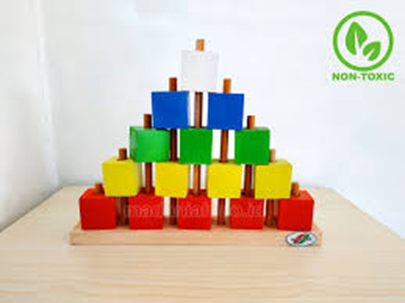 |
| Kelereng, Manik-Manik, atau Biji-Bijian |
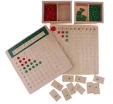 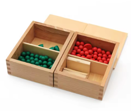 (sumber) |
|
| Uang Mainan dan Barang Dagangan |
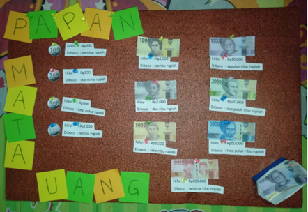 |
|
| Stik Es Krim atau Lidi |
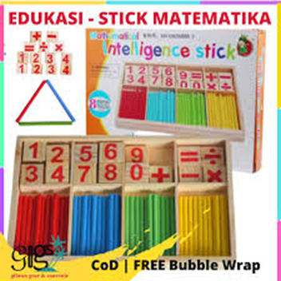 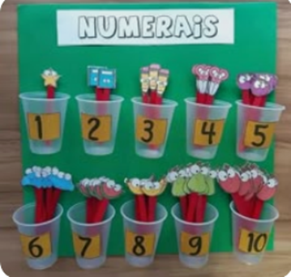 (sumber) |
|
2. Media Visual
Media ini menggunakan gambar, grafik, atau simbol untuk merepresentasikan konsep numerasi. Media visual sangat membantu karena murid dengan hambatan intelektual lebih mudah memahami informasi yang disajikan secara visual.
| Media Visual | ||
| Deskripsi | Media ini membantu mengubah informasi abstrak menjadi sesuatu yang konkret dan mudah dipahami, sehingga mempermudah proses belajar dan daya ingat. | |
| Karakteristik |
|
|
| Contoh Media | Papan Flanel Kartu Gambar |
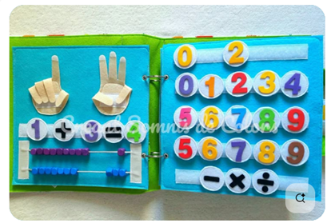 |
| Kartu Angka dan Gambar |
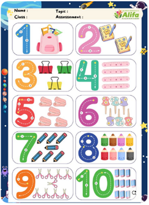 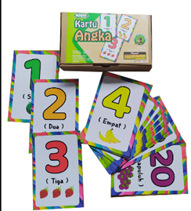 |
|
| Poster atau Bagan |
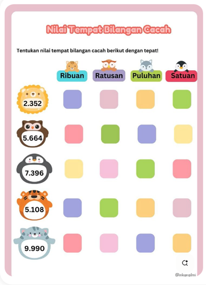 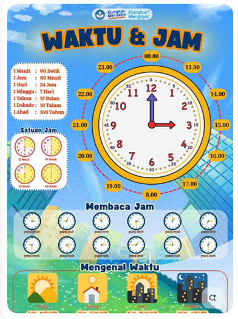 |
|
3. Media Berbasis Permainan (Game-Based Media)
Media pembelajaran berbasis permainan atau game-based media merupakan salah satu pendekatan yang sangat efektif dalam mengajarkan numerasi kepada murid dengan hambatan intelektual. Pendekatan berbasis permainan mengubah konsep matematika yang abstrak dan sulit menjadi aktivitas yang menyenangkan, interaktif, dan relevan dengan kehidupan sehari-hari. Permainan dapat meningkatkan motivasi, mengurangi kecemasan, dan membuat proses belajar menjadi lebih menyenangkan dan interaktif.
| Media Berbasis Permainan (Game-Based Media) | ||
Deskripsi |
Pendekatan efektif untuk mengajarkan numerasi kepada murid dengan hambatan intelektual. Pendekatan ini membuat konsep matematika abstrak menjadi aktivitas yang menyenangkan, interaktif, dan relevan dengan kehidupan sehari-hari | |
| Karakteristik |
|
|
| Contoh Media | Ular Tangga |
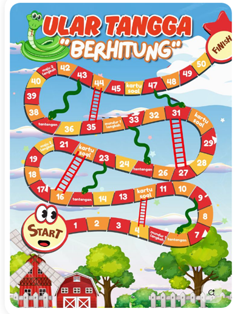 |
| Domino angka | 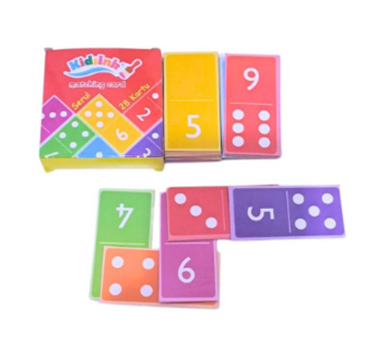 |
|
| Papan Pasak (Pegboard) |
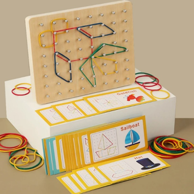 |
|
| Permainan Belanja dengan Uang Mainan |
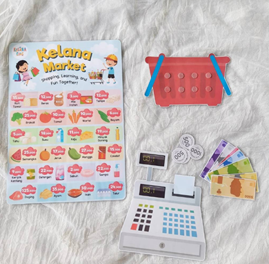 |
|
| Balok Angka (Number Blocks) |
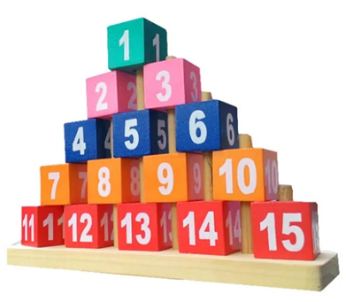 |
|
4. Media Lingkungan Sekitar
Pemanfaatan media yang berasal dari lingkungan sekitar merupakan strategi pembelajaran numerasi yang sangat efektif untuk murid dengan hambatan intelektual. Pendekatan ini mengubah benda-benda yang digunakan dalam kehidupan sehari-hari menjadi alat belajar yang konkret, relevan, dan mudah diakses. Mengajarkan numerasi dengan memanfaatkan media dari lingkungan sekitar akan membantu murid dengan hambatan intelektual untuk memahami bahwa numerasi ada di mana-mana dan memiliki manfaat nyata dalam kehidupan. Para ahli pendidikan, seperti Somantri (2006) menyarankan agar pembelajaran tidak terbatas di dalam kelas tetapi dengan memanfaatkan. Lingkungan sekitar sebagai media pembelajaran numerasi akan sangat relevan dan praktis. Misal:
- Memanfaatkan benda-benda di kelas. Guru membimbing murid untuk menghitung jumlah kursi, meja, atau buku yang ada di kelas.
- Melakukan kegiatan di luar kelas. Guru membimbing murid untuk menghitung jumlah pohon di halaman sekolah atau mengukur lalu membandingkan tinggi teman-teman.
Nah Bapak/Ibu, dengan demikian dapat disimpulkan bahwa media pembelajaran adalah alat yang sangat efektif untuk meningkatkan pembelajaran numerasi bagi murid dengan hambatan intelektual, karena memiliki kemampuan visualisasi, interaktivitas, personalisasi, dan fitur aksesibilitas. Media tersebut jika digunakan secara terpadu, dapat membantu murid dengan hambatan intelektual dalam membangun fondasi numerasi yang kuat dan memahami bahwa numerasi adalah bagian dari kehidupan sehari-hari.